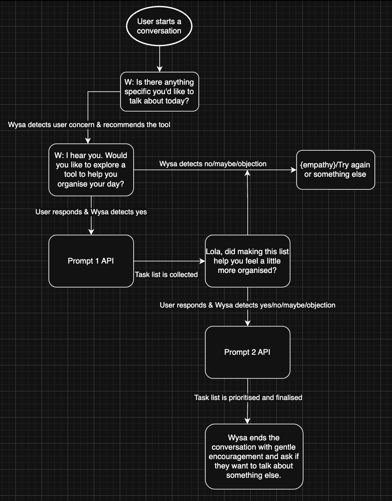

Reimagining a rule-based chatbot using LLMs to support more natural and intuitive conversations.
Wysa has traditionally used rule-based AI to power its mental health chatbot. This allowed the team to carefully control conversations so they stayed safe, empathetic, and aligned with clinical guidelines. However, this approach also meant the chatbot could struggle with more natural, open-ended user messages. One of the existing features helped users organise their day when they felt overwhelmed — built as a deterministic flow with predefined steps and responses. In this project, I redesigned that experience using large language models (LLMs), replacing rigid conversation paths with prompt-driven interactions. The goal was a more flexible and natural experience that could still guide users through organising and prioritising their tasks when they feel overwhelmed.
When users feel stressed and overwhelmed, they get stuck and often don't know where to begin, which can lead to procrastination or avoidance. Wysa already had a feature to help users sort through their thoughts by encouraging them to focus on what they can control, guiding them step by step. But the experience was built as a deterministic flow, which meant conversations could feel rigid and sometimes struggled to adapt to the way users naturally expressed their worries. This created an opportunity to explore whether LLMs could enable a more flexible, natural interaction while still helping users turn chaos into a manageable, actionable plan.
Integrate LLM capabilities into Wysa's chatbot and redesign the existing "organise your day" experience using prompt-driven interactions — creating a more natural conversational flow while still gently guiding users to identify, prioritise, and organise their tasks.
This project required a combination of technical understanding, strategic thinking, and hands-on design. Here's what I contributed:
The redesigned conversation flow keeps the behavioural structure of the original exercise while allowing the LLM to be more intuitive and natural.
The conversation is based on cognitive offloading. Focusing on the things in one's control and structuring them as tasks reduces cognitive load and makes the user feel more in control of their feelings.
Representing the range of users who reach for the "organise your day" exercise.
{{ p.background }}
The tool is recommended when users express:
The system combines deterministic logic with LLM prompts. Because Wysa operates in the mental health space, it is important to maintain control over key parts of the conversation while still allowing it to respond naturally to the user.
Manages conversation entry, intent detection, and transitions.
Handle the user's emotions and feelings, help them build a task list, and prioritise those tasks through natural conversation.

Figure: Redesigned flow — deterministic entry and intent detection wrapped around two LLM prompt calls for task collection and prioritisation, with empathy fallbacks and a gentle exit.
The system stores:
This allows the system to set reminders and save task lists for a later check-in, and helps the team understand the effectiveness of the "Organise your day" exercise.
I broke down the single prompt into two distinct prompts, each with a specific job. Prompt 1 was responsible only for collecting all tasks. Prompt 2 then modified and replayed the list — checking other conditions and handling edge cases.
{{ prompt1 }}
{{ prompt2 }}
The redesigned interaction enables:
The combined systems successfully balance control and flexibility, allowing Wysa to create a safe space for users while having a more natural conversation.